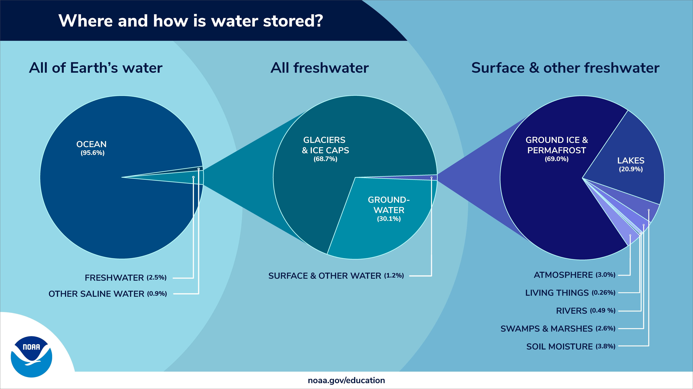
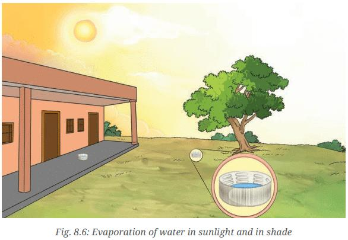
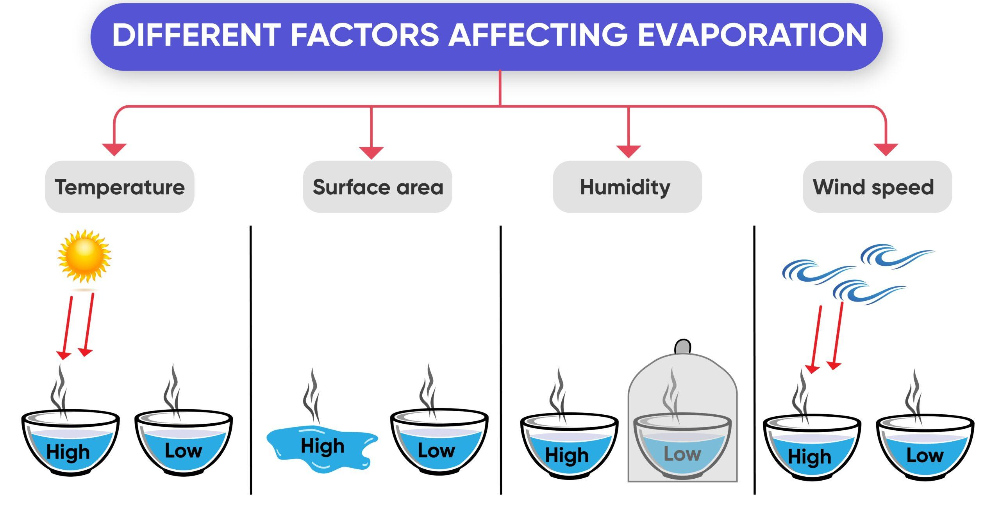

📘 Chapter 08: A Journey Through the States of Water – Questions and Answers
1. Choose the Correct Answer
Question 1. Clouds are formed by the process of __________ of water drops.
- Condensation
- Evaporation
- Melting
- Freezing
Answer: (a) Condensation.
Question 2. Which of the following is the solid form of water?
- Steam
- Water
- Hail
- Rain
Answer: (c) Hail.
Question 3. Drinking water is present in which of the following states?
- Solid
- Liquid
- Gas
- Water vapour
Answer: (b) Liquid.
Question 4. What is the process of conversion of liquid into solid called?
- Melting
- Freezing
- Evaporation
- Condensation
Answer: (b) Freezing.
Question 5. Which of the following is not a factor influencing the rate of evaporation?
- Surface area
- Temperature
- Wind
- Colour of water
Answer: (d) Colour of water.
2. Write True or False. Also, Rectify the Incorrect Statements.
Question 1. In solid state, water exists as snow or frost.
Answer: True.
Question 2. Transpiration involves boiling of water from the surface of the leaves of plants.
Answer: False. Transpiration is the process by which plants lose water in the form of water vapour through their leaves.
Question 3. At high altitudes, water vapour present in the air evaporates into tiny water droplets.
Answer: False. At high altitudes, water vapour cools and condenses into tiny water droplets.
Question 4. Clouds are formed by the joining of water droplets in the atmosphere.
Answer: True.
Question 5. The rate of evaporation decreases with the increase in the wind.
Answer: False. The rate of evaporation increases with an increase in wind speed.
3. Match the Columns
| Column A | Column B | Correct Match |
|---|---|---|
| 1. Tiny water droplets on the lid of a pan | (d) Condensation | 1 – (d) |
| 2. Water in its solid state | (e) Ice | 2 – (e) |
| 3. Shows the cooling effect | (a) Matka | 3 – (a) |
| 4. Hail and snow | (e) Ice | 4 – (e) |
| 5. Water in its gaseous state | (c) Steam | 5 – (c) |
Note: The printed matching exercise appears to have an inconsistency because both "Water in its solid state" and "Hail and snow" relate to ice. The answers above give their scientifically correct meanings.
4. Give Two Properties of Each of the Following Materials
Question 1. Write two properties of water.
Answer:
- Water has no fixed shape.
- Water has a fixed volume and takes the shape of its container.
Question 2. Write two properties of ice.
Answer:
- Ice has a fixed shape.
- Ice has a fixed volume.
Question 3. Write two properties of steam.
Answer:
- Steam has no fixed shape.
- Steam spreads in the available space.
Question 4. Write two properties of a bowl.
Answer:
- A bowl has a fixed shape.
- It can hold liquids and other materials.
Question 5. Write two properties of fire.
Answer:
- Fire produces heat and light.
- Fire can burn many materials.
5. Give One Word for the Following
Question 1. The process by which a liquid changes into a solid.
Answer: Freezing.
Question 2. The process by which a gas directly changes into a solid.
Answer: Deposition.
Question 3. The process by which a solid changes into a liquid.
Answer: Melting.
Question 4. The process by which a gas changes into a liquid.
Answer: Condensation.
Question 5. Continuous circulation of water from the Earth to the atmosphere and back again.
Answer: Water cycle.
6. Give Two Examples of Each of the Following
Question 1. Water in solid state.
Answer:
- Ice
- Snow
Question 2. Water in a liquid state.
Answer:
- River water
- Rainwater
Question 3. Water in a gaseous state.
Answer:
- Steam
- Water vapour
Question 4. Where does transpiration occur?
Answer:
- Leaves of trees
- Leaves of grass
Question 5. Where does evaporation occur?
Answer:
- Drying of wet clothes
- Drying of water from puddles
7. Define the Following Terms
Question 1. What is melting?
Answer: The process in which a solid changes into a liquid on heating is called melting.
Question 2. What is freezing?
Answer: The process in which a liquid changes into a solid on cooling is called freezing.
Question 3. What is condensation?
Answer: The process in which a gas or vapour changes into a liquid on cooling is called condensation.
Question 4. What is evaporation?
Answer: The process in which a liquid changes into vapour from its surface is called evaporation.
Question 5. What is the water cycle?
Answer: The continuous movement of water from the Earth's surface to the atmosphere and back to the Earth is called the water cycle.
8. Answer the Following Questions Briefly
Question 1. How is boiling different from evaporation?
Answer: Boiling and evaporation are two processes by which a liquid changes into vapour.
| Evaporation | Boiling |
|---|---|
| It takes place at all temperatures. | It takes place at the boiling point of a liquid. |
| It occurs only at the surface of a liquid. | It occurs throughout the liquid. |
| It is generally a slow process. | It is generally a faster process. |
| Example: Drying of wet clothes. | Example: Boiling of water. |
Question 2. Have you observed condensation in real life? If yes, where?
Answer: Yes, we can observe condensation in many places.
- Water droplets appear on the outer surface of a cold glass.
- Water droplets form on the inner side of a lid while cooking.
- Dewdrops form on grass and leaves in the morning.
Question 3. Give examples of three activities from your daily life where you observe the process of evaporation.
Answer:
- Drying of wet clothes in sunlight.
- Drying of water from wet floors.
- Drying of puddles after rain.
Question 4. How can water change its states from one state to another?
Answer: Water changes its state by gaining or losing heat energy.
- Ice changes into water by melting.
- Water changes into ice by freezing.
- Water changes into water vapour by evaporation or boiling.
- Water vapour changes into water by condensation.
Question 5. A, B, C and D are the processes in the given figure. Identify and briefly explain the respective processes.
Answer:
| Label | Process | Explanation |
|---|---|---|
| A | Melting | Ice changes into liquid water on heating. |
| B | Freezing | Liquid water changes into ice on cooling. |
| C | Vaporisation | Liquid water changes into water vapour on heating. |
| D | Condensation | Water vapour changes into liquid water on cooling. |

9. Answer the Following Questions in Detail
Question 1. Explain the distribution of water on Earth with the help of pie charts.
Answer: About 71% of the Earth's surface is covered with water. The remaining 29% is land.
The distribution of water on Earth is as follows:
- About 96.5% of Earth's water is present in seas and oceans as salty water.
- About 1.7% is present as groundwater.
- About 1.7% is frozen in glaciers and ice caps.
- A very small amount is present in rivers, lakes and the atmosphere.
Only about 2.5% of the total water on Earth is freshwater. Most of this freshwater is frozen in ice. Only a small amount is available in rivers, lakes and other water bodies.
Conclusion: Most of the water on Earth is salty or frozen. Therefore, we should use freshwater carefully and conserve it.

Question 2. With the help of an activity, show that the rate of evaporation depends on the temperature of the surroundings.
Answer: We can perform a simple activity to show that evaporation is faster at higher temperatures.
Materials Required:
- Two bowls of the same size
- Water
- Measuring cup
- Sunlight and a shady place
Procedure:
- Take two bowls of the same size.
- Pour an equal amount of water into both bowls.
- Mark the water level in each bowl.
- Keep one bowl in sunlight.
- Keep the other bowl under the shade of a tree.
- Observe the water level in both bowls after some time.
Observation:
- The water level in both bowls decreases.
- The water level in the bowl kept in sunlight decreases faster.
- The water level in the bowl kept in the shade decreases more slowly.
Conclusion: The temperature of the surroundings affects the rate of evaporation. Higher temperature increases the rate of evaporation.

Question 3. Explain the water cycle with the help of a diagram.
Answer: The continuous movement of water from the Earth's surface to the atmosphere and back to the Earth is called the water cycle.
The water cycle has four main steps:
1. Evaporation
The Sun heats water in rivers, lakes and oceans. Water changes into water vapour and rises into the atmosphere.
2. Condensation
Water vapour rises and cools in the atmosphere. It changes into tiny water droplets. These droplets collect together to form clouds.
3. Precipitation
When water droplets in clouds become heavy, they fall to the Earth as rain, hail or snow.
4. Collection
Water collects in rivers, lakes, oceans and other water bodies. The cycle starts again.
Conclusion: The water cycle maintains the balance of water on Earth and provides water to all living organisms.

Question 4. Explain the properties of the three states of matter.
Answer: Water exists in three states: solid, liquid and gas. Each state has different properties.
1. Solid State (Ice)
- Solids have a fixed shape.
- Solids have a fixed volume.
- Their particles are closely packed.
- They cannot flow easily.
Examples: Ice, snow and frost.
2. Liquid State (Water)
- Liquids have no fixed shape.
- Liquids have a fixed volume.
- They take the shape of their container.
- They can flow easily.
Examples: River water, milk and oil.
3. Gaseous State (Water Vapour)
- Gases have no fixed shape.
- Gases have no fixed volume.
- Their particles are far apart.
- They spread in the available space.
Examples: Water vapour and steam.
| Property | Solid | Liquid | Gas |
|---|---|---|---|
| Shape | Fixed | Not fixed | Not fixed |
| Volume | Fixed | Fixed | Not fixed |
| Particles | Closely packed | Less closely packed | Far apart |
| Flow | Cannot flow easily | Can flow | Spreads easily |
| Example | Ice | Water | Water vapour |

Question 5. What are the various factors influencing the rate of evaporation? Explain.
Answer: The rate of evaporation is affected by four main factors.
1. Surface Area
The larger the surface area, the faster the evaporation.
Example: Water spread on a plate evaporates faster than water kept in a small bowl.
2. Temperature
Higher temperature increases the rate of evaporation because the liquid gets more heat energy.
Example: Wet clothes dry faster in sunlight than in the shade.
3. Wind Speed
Higher wind speed increases the rate of evaporation because moving air carries water vapour away from the surface.
Example: Clothes dry faster on a windy day.
4. Humidity
Higher humidity decreases the rate of evaporation because the air already contains more water vapour.
Example: Clothes dry slowly on rainy days.
Conclusion: Evaporation increases with an increase in surface area, temperature and wind speed. It decreases with an increase in humidity.

10. Additional Important Questions and Answers
Question 1. Why is Earth called the blue planet?
Answer: Earth is called the blue planet because about 71% of its surface is covered with water. It looks blue when seen from space.
Question 2. What is transpiration?
Answer: Transpiration is the process by which plants lose water in the form of water vapour through their leaves.
Question 3. What is fog? How is it formed?
Answer: Fog is a collection of tiny water droplets near the ground. It forms when water vapour in the air cools and condenses into tiny water droplets.
Question 4. Why do we observe dewdrops on plants in the morning?
Answer: At night, water vapour in the air comes in contact with cool leaves and grass. It loses heat and changes into tiny water droplets by condensation. These droplets are called dew.
Question 5. Why do tiny droplets appear on the outer surface of a glass containing ice?
Answer: The ice makes the outer surface of the glass cold. Water vapour in the surrounding air touches this cold surface and changes into tiny water droplets. This process is called condensation.
Question 6. Why does water sprinkled on rooftops disappear after some time?
Answer: The water gets heat from the surroundings and changes into water vapour. This process is called evaporation.
Question 7. Is the change of state of matter a reversible change? Give a reason.
Answer: Yes, a change of state is generally reversible. For example, ice melts into water when heated. Water changes back into ice when cooled.
Question 8. Why should we use a clay pot for storing water?
Answer: A clay pot keeps water cool naturally. Some water seeps through its tiny pores and evaporates from the outer surface. During evaporation, heat is taken away from the pot and the water inside becomes cool.
Question 9. How are clouds formed?
Answer: Water from rivers, lakes and oceans evaporates due to the heat of the Sun. Water vapour rises into the atmosphere, cools and condenses into tiny water droplets. These droplets collect together to form clouds.
Question 10. How does rain occur?
Answer: Tiny water droplets in clouds join together to form larger drops. When these drops become too heavy, they fall to the ground as rain.
Question 11. What is precipitation?
Answer: The process of water falling back to Earth in the form of rain, hail or snow is called precipitation.
Question 12. Why is the water cycle important?
Answer: The water cycle maintains the balance of water on Earth. It provides water to plants, animals and humans and helps maintain weather patterns.
Question 13. How can we conserve water?
Answer: We can conserve water in the following ways:
- Close taps when not in use.
- Repair leaking taps and pipes.
- Do not waste water while bathing or washing.
- Collect and use rainwater.
- Reuse water whenever possible.
- Do not throw waste into rivers, lakes and ponds.
- Plant more trees.
11. Quick Revision – Important Points
- Water exists in three states: solid, liquid and gas.
- Ice is the solid state of water.
- Water is the liquid state of water.
- Water vapour is the gaseous state of water.
- Melting changes a solid into a liquid.
- Freezing changes a liquid into a solid.
- Evaporation changes a liquid into vapour.
- Condensation changes vapour into liquid.
- Transpiration is the loss of water vapour from plants.
- The water cycle is the continuous movement of water on Earth.
- Temperature, surface area, wind speed and humidity affect evaporation.
- Evaporation causes cooling.
- About 71% of Earth's surface is covered with water.
- Only about 2.5% of Earth's total water is freshwater.
- We should conserve water for future generations.
12. Chapter Summary
Water is essential for all living organisms. It exists in three states: solid, liquid and gas. Water can change from one state to another by gaining or losing heat. Melting, freezing, evaporation, boiling and condensation are important changes in the state of water.
The rate of evaporation depends on surface area, temperature, wind speed and humidity. Evaporation also produces a cooling effect. The water cycle includes evaporation, condensation and precipitation. We should conserve water and keep our water bodies clean.
Message of the Chapter
Water is precious for all living beings. We should use it carefully, avoid wasting it and keep our water sources clean.
MCQ Quiz
अध्याय के वस्तुनिष्ठ प्रश्नों का अभ्यास करें।
MCQ Quiz शुरू करेंPDF Notes
इस अध्याय के नोट्स PDF में पढ़ें या डाउनलोड करें।
📄 View PDF ⬇️ Download PDF